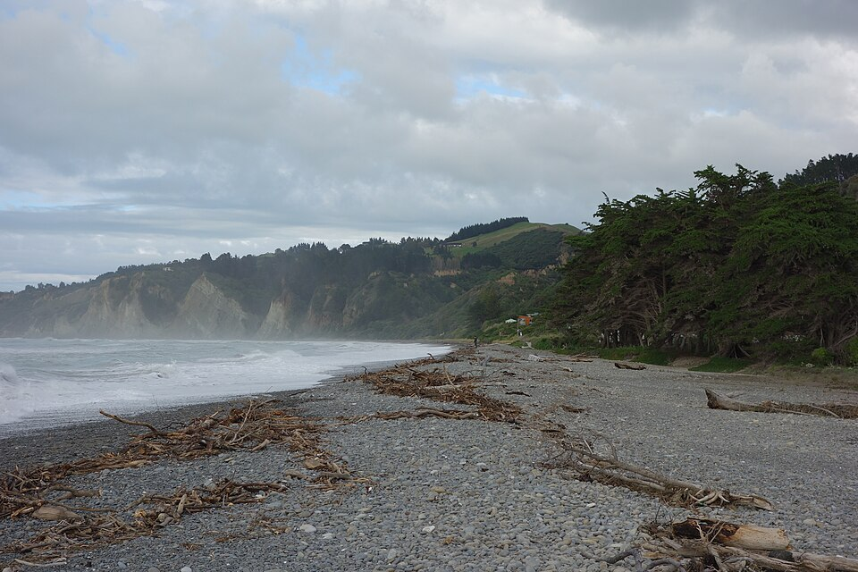

lør14 novFør rundtur · arbejde
Gore Bay · ankomst og arbejde
Foreløbig · arbejdsophold før Helena ankommer
VejretGore Bay
Første arbejdsnat ved Gore Bay · præcis afdeling vælges senere
- GørAnkom til Gore Bay; check-in er fra kl. 12. Find pladsen og afprøv internet samt laptop-opladning, inden du går i gang med arbejdet.
- Sov$25–30Gore Bay Campground · første af to nætter. Foreløbig, ikke booket.
- HuskBekræft et sted at sidde med laptop, almindelig strøm og brugbart internet, før du baserer arbejdsdagen her. Kaikōura TOP 10 og Alpine-Pacific er alternativer med dokumenteret Wi-Fi og fællesrum.
Campingplads · Gore Bay

lør 14 nov–søn 15 nov · 2 nætterFør rundtur · Karsten arbejder
Gore Bay Campground
- Ophold
- Foreløbig: ankomst lør 14 nov, to nætter lør 14 nov og søn 15 nov, afrejse man 16 nov. Præcis afdeling og plads vælges senere; ikke booket, ledighed ikke tjekket.
- Pris
- Én voksen: $25 uden strøm eller $30 med strøm pr. nat; $50–60 for to nætter. To voksne: $35/$40 pr. nat. Pladsens egen prisliste, tjekket tir 10 nov.
- Faciliteter
- Main Camp har køkken, toiletter, varme bade og vaskeri. Hillside deler faciliteter og er udtrykkeligt egnet til biler med tagtelt. Afdeling vælges senere.
- Arbejde og opladning
- Mobildækning oplyses siden april 2025. Wi-Fi, hastighed på eget mobilnet og et arbejdsbord med almindelig stikkontakt er ikke bekræftet. Aftal laptop-opladning og arbejdsplads med værten. Strømplads kræver godkendt campingkabel med RCD; en almindelig laptopoplader alene passer ikke til campingudtaget.
To arbejdsnætter ved stranden før rundturens start med Helena. Gore Bay står som et foreløbigt valg, mens arbejdsforholdene afklares.